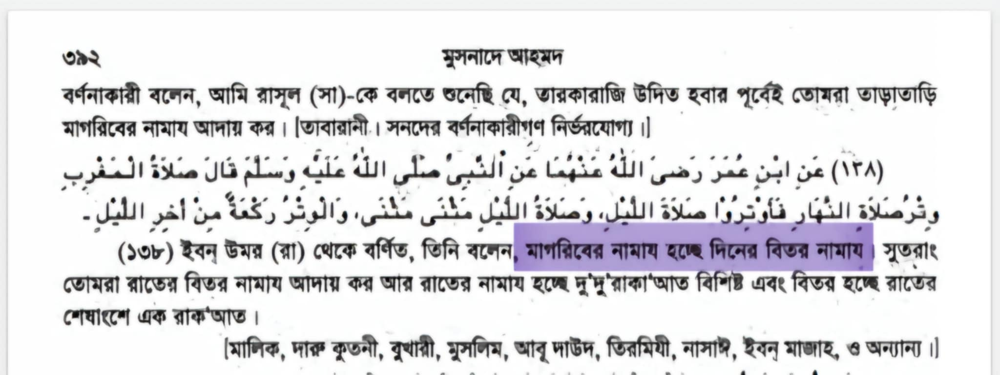
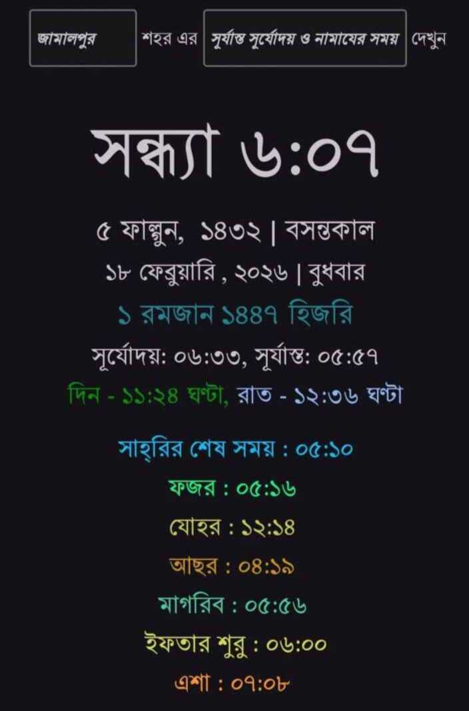

সিয়াম সাধনা: ক্বোরআন ও সুন্নাহর আলোকে সঠিক দিকনির্দেশনা
১. সিয়ামের প্রকৃত উদ্দেশ্য
সত্যের কোন দল, সম্প্রদায়, ফেরকা হয় না, সত্যের কেবল অনুসারী হয়। এ বিজ্ঞপ্তি হচ্ছে সে সমস্ত নর-নারীদের উদ্দেশ্যে,যারা আল্লাহর দাসত্বের অঙ্গিকার পালনার্থে ঈমান ধারণ করে, সালাত কায়েম করে, সিয়াম সাধনা করে, যাকাত পরিশোধ করে এবং হজ্জ পালন করে। যারা লোক দেখানো সাম্প্রদায়ীক পূজা-পার্বণের মতো ধর্মীয় অনুষ্ঠানাদি করে, তাদের জন্য নয়। আমরা আল্লাহর সেই বান্দাদের মধ্যে অর্ন্তভূক্ত হওয়ার জন্য আল্লাহর কাছে দোয়াপ্রাথী যারা একমাত্র আল্লাহকে তাঁর কিতাব ও রাসূলদের অনুকরণে বিশ্বাস করে, জানে ও মানে।
পৃথিবীতে আল্লাহর পর তাঁর সবচেয়ে বড়ো দান শাশ্বত দ্বীন ইসলাম। এর স্তম্ভগুলোঃ ঈমান, সালাত ক্বায়েম, সিয়াম সাধনা, যাকাত আদায় ও হজ্জ পালন করলে মানব সমাজ আল্লাহর রহমতে ভূ-পৃষ্ঠ বেহেশতে রূপান্তর হয়। বর্তমানে বিশ্বে উক্ত কাজগুলো ঈমানহীন অনুষ্ঠানরুপে পালনের ফলে মানবজাতি আজ ধ্বংসের কিনারে।
সংযম, সাশ্রয় এবং ত্যাগের মাস, রমজান সঠিক সিয়াম সাধনায় উত্তীর্ন হতে আল্লাহর আদিষ্ট ও রাসূল পালিত সেহরী ও ইফতারের রোজা পালনে রহমত, মাগফিরাত ও নরকাগ্নি থেকে মুক্তির সাফল্য অর্জন করো। বর্তমান প্রথার উপবাস সর্বস্ব রোজার প্রহসনে গোটা মানব জাতি, বিশেষ করে নামধারী “মুসলমানরা” আল্লাহ কর্তৃক অভিশপ্ত।
সষ্টার শ্রেষ্ঠ জীব মানবজাতি আল্লাহর প্রতিনিধি রূপে গোটা সৃষ্টির লালনে ভারসাম্য রক্ষার দায়িত্বে আদিষ্ট। প্রাণী জগতের ক্ষুধা-পিপাসায় আল্লাহ খাদ্য-পানীয় দিয়ে সৃষ্টির লালন পলন করেন। জীবশ্রেষ্ঠ মানুষ মাহে রমজানে এক মাস নিশা- নিষ্কৃতির সুবহে সাদেক থেকে নিশা আগমনের এশার ওয়াক্ত শুরু পর্যন্ত সিয়াম পালনে আদিষ্ট।
ক্ষুধা-তৃষ্ণার জ্বালা ভোগ করে স্রষ্টার দানা-পানির মূল্যায়ন ও দীন দুঃখির অভাব-অনটন বিদূরনের কঠোর অনুশীলনের নিমিত্ত্ব মানব সৃষ্টির ঊষালগ্ন থেকে সকল প্রাপ্ত বয়স্ক মানুষের জন্যে “উপবাস” পালন বাধ্যতা মূলক ছিলো। মানব সভ্যতার ক্রম বিকাশে পূর্ণতার সূচকে হযরত ইব্রাহীম, মূসা ও ঈসা আঃদের সমাপক শেষ নবী মুহাম্মাদ সঃ প্রেরিত হন। তিনি রমজানের সিয়াম সাধনার চূড়ান্ত রূপদানে আল্লাহ কর্তৃক আদিষ্ট হন। তিনি চূড়ান্ত আদর্শ।
মর্ত্যের মানুষ স্বর্গরোহন, তথা মেরাজের প্রতীক মুহাম্মাদুর রাসুলুল্লাহ। তাঁর উপর ক্বোরআন নাযিল আরম্ভ হয় এ রমজান মাসে, সত্য প্রতিষ্ঠায় অসত্য নির্মূলে আত্মরক্ষার বদর যুদ্ধ সংঘটিত হয় এ রমজান মাসে, পূর্ণ ক্বোরআন চর্চার প্রশিক্ষন কার্যক্রম চালু হয় এ রমজান মাসে এবং সর্বপরি মানুষ বেচা কেনা, মানবতার অবমাননা ও পৈশাচিক গোত্র ও বর্ণবাদী শোষনের হোতা মক্কার ক্বোরেশীদের কব্জা থেকে মান সাম্যের ঐশী মন্দির কা’বা মুক্ত ও পবিত্র হয় এ মাহে রমজানুল মুবারকে।
২. দ্বীনের বিকৃতি ও আমাদের করণীয়
ইয়াহুদী ও খৃষ্টানরা আল্লাহর নবীদের প্রদর্শিত দ্বীনকে বিকৃত করে মানুষকে জাতে ধর্মে বহুধা বিভক্ত করেছে। তা না হলে মানবজাতি এক পরিবার রয়ে যেতো। সকল নবী রাসূলগণ আল্লাহর দ্বীন পালনে হুবহু একই শরীআ ও একই সালাত, সিয়াম ও হজ্জ পালন করেছেন এবং তাদের অনুসারী সবাই তাদের মতো মুসলিম ছিলো। কেউ ইয়াহুদী, খৃষ্টান ও মোহামেডান ছিলোনা।
- তাই আল্লাহ তাঁর শেষ নবী সঃ কে বলেছেন, “তুমি কি ওদের দেখেছো যারা আল্লাহর দ্বীনকে বিকৃত করে তাদের সম্প্রদায়কে ধ্বংসের দ্বারপ্রান্তে জাহান্নামের কিনারে দাঁড় করিয়েছে? একটু পরেই তারা তাতে পতিত হবে। কতোই না করুণ তাদের পরিণতি! (ইব্রাহীম-২৮-২৯)
- হযরত মূসা ও ঈসা আঃদের শিখানো তাওহীদী কালেমা, সালাত ও সিয়ামকে ইয়াহুদী ও খৃষ্টানরা আকার প্রকার সব দিক দিয়ে বিকৃত করে ফেলে অভিশপ্ত হয়। তাই আল্লাহ তাঁর আখেরী নবী সঃ এর মাধ্যমে ঈমানদারদের আল ক্বোরআন ও রাসূল আঃ এর মুখে বার বার নির্দেশ করেছেন, তারা যেন কোনো ব্যাপারেই ইয়াহুদী নাসারাদের বিকৃত ঐক্যের দ্বীনকে অনৈক্যের এবং বিভক্তির, সাম্প্রদায়িক ধর্ম ও ধর্মাচারকে অনুসরণ না করে। করলে তারাও ওদের মতো হয়ে যাবে। আল্লাহ সকল ঈমানদারদের জন্য সর্বকালে একই ভাবে সিয়াম পালন ও সাধনা করতে বলেছেন। সিয়াম সাধনা মানুষকে তাক্বওয়ার আগুনে পুড়ে খাঁটি সোনা মুত্তাক্বী বানায়।
৩. সিয়াম ও অর্থনৈতিক ভারসাম্য
মাহে রমজান সঠিক সিয়াম পালনকারীদের জন্য শুধু বরকত ও বরকতের মাস। আর যারা ইয়াহুদী খৃষ্ঠানদের মতো বিকৃতভাবে পালন করে, তাদের জন্য অপচয় ও পাপাচারের দুর্যোগের মাস।
ঈমানদারের জন্য কম খরচে বেশি ইবাদত করে আগামী এগারো মাসের কৃচ্ছতা সাধনার শিক্ষা দেয় মাহে রমজান। আল্লাহর নির্দেশ ও রাসূল সঃ এর আমল অনুযায়ী রোজা পালন করলে রমজান মাসে খরচ অর্ধেক কমে বাজারের দ্রব্যমূল্য কমে যায়।
- ইয়াহুদী –খৃষ্টানদের মতো রোজা রাখলে অন্যান্য মাসের তুলনায় রোজার মাসে খরচ দ্বিগুণ হয়ে যায়। বাজারে নিত্য প্রয়োজনীয় দ্রব্যের মূল্য বাড়ে। অফিস আদালতে ঘুষ বাড়ে। হাটে বাজারে ভোগবাদের প্রদর্শন হয় এবং ইফতার পার্টি ও ঈদের পোষাকের প্রতিযোগিতায় ক্রিসমাসের মতো রোজা ও ঈদ ভোগ কেন্দ্রিক উৎসব / পার্বণ হয়ে যায়।
- ইসলামের বিধান মতো রোজা রেখে ইফতার করলে হিসাব করে দেখা যায় যে, বাংলাদেশে এক রমযানের সঞ্চয়ে একটি যমুনা ব্রীজ নির্মাণ করা যায়।
৪. তোমরা রাত্র থেকে রাত্র র্পযন্ত সিয়াম পূর্ণ করো
আল ক্বোরআনে আল্লাহ বলেছেন সোবহে সাদেকের পূর্বে সেহরী শেষ করে রাত্রি পর্যন্ত সিয়াম পূর্ণ করতে। তদ্রূপ আল ক্বোরআনে ফজর ও মাগরিবকে দিবসের দু’প্রান্ত “তারাফাঁইন নাহার” বলা হয়েছে। এশাকে বলা হয়েছে নিশার প্ররম্ভ বা “যুলাফাম মিনাললাইল”। অর্থাৎ ফজর যেমন রাত নয়, মাগরিবও রাত নয়। এশা শুরূ হলে রাত্রের আগমন ঘটে। তখন ইফতারের সময় হয়। মাগরিবের সময় নয়।
বিশ্বের অভিন্ন, অবিভক্ত ও একান্ন আদম পরিবার মানবজাতির সেতু বন্ধনের মাস, রমজানে আল্লাহ তাঁর শেষ নবীর মাধ্যমে আমাদের সকলকে আদেশ করেন “তোমরা রাত্র অবধি সিয়ামকে পূর্ণ করবেই।”
ثُمَّ أَتِمُّ الْصِياَمَ إلَيْلِ
(সূরা বাক্বারা-১৮৭)
রাসূল সঃ অবশ্যই রাত্র পর্যন্ত রোজা পূর্ণ করেছেন। “মাগরিব” অর্থাৎ সন্ধ্যা পর্যন্ত করেন নি। তার মৃত্যুর পর সুন্নি খলিফা উমর ও ওসমান রোজা অবস্থায় মাগরিব পড়ে রাতের অন্ধকারের অপেক্ষা করতো। তারপর এশার সালাত আদায় করে তারপরেই ইফতার করতো। ভাড়াটে মাওলানারা এটা জানলেও তারা সাম্প্রদায়িক কুশিক্ষার ফলে স্বেচ্ছায় অন্ধত্ববরণ করেছেন এবং বাকিদেরও অন্ধকারে রাখাই তাদের সাম্প্রদায়িক ধর্মের পুরহিততন্ত্রের পেশা।
وحَدَّثَنِى عَنْ مَالِكْ، عَنْ إبْن شِهَاب، عَنْ حَمِيْد بِنْ عَبْد الرَحْمَان، أنَّ عُمَر بْن الْخَطَّاب و عُثْمَان بْنَ عَفَّان كَانَا يُصَلِّيَانِ الْمَغْرِبَ، حِيْنَ ينظران إلى الليل الأسود، قبل أن يفطرا. ثم يفطران بعد الصلاة. وذالك في رمضان…
অর্থ: উমর ইবনুল খাত্তাব ও উসমান ইবন আফফান মাগরিবের সালাত পড়তো, তারপর তারা রাতের অন্ধকারের অপেক্ষা করতো, ইফতারের পূর্বে। অতঃপর তারা সালাতের পর ইফতার করতো। এবং অবশ্যই তা রমজান মাসে।
স্মর্তব্য, মুয়াত্তা মালিক সুন্নী সম্প্রদায়ের বোখারী ও মুসলিম থেকেও নির্ভর ও প্রাচীনতম হাদিস গ্রন্থ। খলিফা আলীর অনুসারী শিয়া সম্প্রদায় অদ্যবধি আল্লাহর হুকুম ও নবী সঃএর আচরণ অনুযায়ী এশার নামাজ পড়ে তারপর ইফতার করে।
মাগরিব পর্যন্ত রোজা যেরূপ আল ক্বোরআন ও রাসূলের আদর্শে নেই, ঠিক তদরূপ রমজান মাসে রাতের প্রথমার্ধে বিশ রাকাত তারাবীহ্ ক্বোরআন ও রাসূল সঃ এর জীবনীতে কোথাও নেই। বরং রাসূল সঃ রমজানে এশার পর রাতের প্রথমার্ধে কোন নামাজের সংযোজন কঠোর ভাষায় নিষেধ করেছেন। (বোখারী-মুসলিম)
নিছক ব্যক্তিগত খেয়াল-খুশীর উপর খলিফা উমর এ তারাবীর প্রচলন করে তাকে নিজেই “বিদআত” আখ্যায়িত করে নিরুৎসাহিত করেছে।
বিশেষ সাহাবা ও ওলামাদের ‘ইজমা’ ভিত্তিক বিশ রাকাত তারাবীর পক্ষে উল্লেখিত পত্রিকাটিতে প্রচার চালায়। হে মানুষ! বিবেককে প্রশ্ন করো, এরা কোন জাত, ও কোন ধর্মের?! আল্লাহ বিধায়ক, রাসূল সঃ আদর্শ। তার বাইরে যে ইজমা বা Consensus, বা ঐকমত্য, কি পয়লা রমজানে এক মহিলাকে ঘিরে ঐক্য জোটের মোল্লাদের ইফতার খাওয়ার ইজমা?! না আল্লাহ রাসূল সঃকে ত্যাগ করে উষ্ট্র ও সিফফিনের যুদ্ধে এক লাখ মুসলমানের(?) লাশ ফেলে সুন্নী-শিয়ার জন্মদাতা সাহাবাদের ইজমা, যার ফলে কুয়েত, লিবিয়া, ইরাক ও সৌদীআরব সহ গোটা মুসলিম বিশ্বে বুশ-ব্লেয়ারদের ইমামত(?) প্রতিষ্ঠিত এবং ইরাকে সুন্নী-শিয়া ইজমার আত্মহনন যজ্ঞে দজ্বলা-ফোরাতের জল রক্তলাল?! মধ্যপ্রাচ্যেও তেলের সাগর ও স্বর্নের খনিও সেই ইজমায় ইউরোপ-আমেরিকার লুটপাটের স্বর্গ?!
এই বিশ্ব লুটেরাদের নির্বিশেষে দোসর খন্ডিত জাতীয়বাদের রাষ্ট্র সমূহের সরকার সমূহ। এই রাষ্ট্রপুঞ্জের শোষন ব্যাভিচারের প্রতিক্রিয়ায় জন্ম নিয়েছে সন্ত্রাসবাদ। রাষ্ট্রীয় সন্ত্রাসবাদে পিষ্ট আমজনতার প্রতিরোধ ও প্রতিবাদের ভাষা সন্ত্রাসবাদ ও বোমাবাজী। বিশ্বের এ পিষ্ট আমজনতাকেই আল ক্বোরআনে আল্লাহ নাম করেছেন “আল মুস্তাদআফুন”। এদের ক্ষমতায়নে “নয়া বিশ্ব ব্যবস্থা” New World Order প্রতিষ্ঠার অঙ্গিকারে আল্লাহ প্রেরন করেছেন শেষ নবী মুহাম্মাদ সঃকে “রাহমাতুল্লিল আলামীন” বিশেষনে।
তাঁর নবুওত প্রাপ্তি, তাঁর উপর প্রথম ঐশী আদেশ “অহী” নাযিল, বদরের আত্মরক্ষার যুদ্ধ, পরিখার আত্মরক্ষার সংগ্রাম এবং মক্কা মুক্তির ঘটনা এ রমজান মাসে সংঘটিত হয়। সুদ, ঘুষ, চাঁদাবাজী, দ্রব্যমূল্য বৃদ্ধি ও নগ্ন নারীদেহের মাংস ব্যবসা, ঈদ মেলা ও ঈদ ফ্যাশনের হারাম পয়সায় ইফতারবাজীর জন্যে এ রমজান নয়। বরং এ দূর্বৃত্তায়ন প্রতিরোধ ও নির্মূলের জন্য সংযম সংগ্রামের মাস এ রমজান। বাংলাদেশের কোন সরকার, কোন সন্ত্রাসালয়, কোন সচিবালয়, কোন বিচারালয়, কোন অধিদফতর ও সংস্থাপন ও হারামখোরদের কলঙ্ক ও পাপ মুক্ত? অথচ এদেরই ইফতার ও ঈদের দুর্বুত্তায়নে হাট-বাজার নরক! তাও আবার মাহে রমজানে?!
৫. ইফতারের সঠিক সময় ও তারাবীহ প্রসঙ্গ
অভিশপ্ত ও সাম্প্রদায়িকতার জন্মদাতা ইয়াহুদী-খৃষ্টানরা আল্লাহর নির্দেশ অমান্য করে এক এশা আরেক এশা পর্যন্ত অর্থাৎ চব্বিশ ঘন্টা রোজা চালু করে। আখেরী নবী সঃ বলে যান ওদের অনুসরন না করে এশার ওয়াক্ত হতেই ইফতার করতে। আরব সাম্রাজ্যবাদীরা আল্লাহ ও রাসূলের নির্দেশ অমান্য করে ইসলাম ও ইয়াহুদীবাদ উভয় বাদ দিয়ে একটি তৃতীয় শয়তানী চালু করে। অর্থাৎ শেষ রাত্র থেকে সন্ধ্যা পর্যন্ত। রাত পর্যন্ত নয়। ইয়াহুদীরা লম্বা করে ফেলে, ওদের চাচাতো ভাই আরবরা রোজাকে খাটো করে মানব জাতিকে মাহে রমজানের বরকত ও রহমত থেকে বিচ্যুত করে।
- ইফতারীর দোকানদাররা এটাকে লুফে নেয়। কারণ ইফতারের নামে মুসলিম বিশ্বে বাজারে অতিভোজ ও ভোগের জাহান্নাম শুরু হয়। দশ টাকার পেঁয়াজ বিশ টাকা হয়, পাঁচ টাকার বেগুন ষোল টাকা এবং এ হারে লুটের বাজার চালু হয়।
আর যদি ক্বোরআন ও রাসূল সঃ এর নির্দেশ অনুযায়ী ইফতার করা হয়, তা হলে ইসলামী সমাজ আসরের সময় থেকে মাগরিব ও মাগরিব থেকে এশা পর্যন্ত ঘরে ঘরে ক্বোরআন তেলাওয়াত ও শিক্ষার বেহেশ্তী সময় পায়। গৃহিণীরা দিবাভাগে রাতের খাবার পাকিয়ে ক্বোরআন শিক্ষায় স্বামী সন্তানদের সাথে শরীক হতে পারে। এশার আযানের পর যখন মানুষ রাতের খাবার খাবে, তখন তার সাথে পেয়াজী, বেগুনী, বুট, ভাজাপোড়া ও অন্যান্য রাক্ষুসে খাওয়া খাবে না। শুধু উপাদেয় সুপাচ্য সুষম খাদ্য খাবে। তাতে গৃহকর্তার অর্ধেক সাশ্রয় হবে। বাড়তি কামাই এর জন্য ঘুষ খেতে হবেনা। গৃহিনীর এতো কিছু পাকাতে গলদঘর্ম হতে হবেনা। এশা পড়ে ঘুমিয়ে আবার মধ্য রাতের পর ঘুম থেকে উঠে তৃপ্তিভরে তাহাজ্জুদ নামাজ ও ক্বোরআন তেলাওয়াত করতে পারবে।
এখানে অতি গুরুত্বের সাথে মনে রাখতে হবে যা, ইসলামে “তারাবী” নামের কোন নামাজ নেই। রাসূল সঃ এরূপ কোন সালাতের সংযোজন কঠোর ভাবে নিষেধ করেছেন। (বোখারী-মুসলিম) খলিফা ওমর “বিদ্আত” বলে এটাকে চালু করে এ বলে যে, “যারা শেষ রাতে উঠে রমজানে তাহাজ্জুদ পড়বেনা, তারা রাত্রের প্রথমার্ধে হাট বাজারে আড্ডা না দিয়ে নামাজে দাঁড়িয়ে ক্বোরআন শুনুক। তবে এটি একটি বিদ্আত”। রাসূল সঃ যা করেন নি, ধর্মে তা করাই বিদ্আত। বিদ্আত দাঁড় করা কঠোরভাবে নিষিদ্ধ। কিন্তু রমজান মাসে মস্জিদ কমিটি চাঁদা তোলা ও হাফেজ ভাড়া করে অতিরিক্ত আয়ের ব্যবস্থা করতে এ বিদ্আতকে এমনভাবে প্রতিষ্ঠিত করেছে যে, তার চাপে মাহে রমজানে ক্বোরআন বুঝার ফরজই চাপা পড়ে হারিয়ে গেছে। তারাবীর তারাহুড়ায় হাফেজ, ইমাম ও মুসল্লী সবাই ক্বোরআন শুনে বুঝে, ক্বোরআনের গভীরে পৌঁছার সুযোগ চীরতরে হারিয়েছে। ইন্নালিল্লাহি ওয়া ইন্না ইলাই হি রাজিউন।
আল ক্বোরআনে আল্লাহ যেভাবে ফজর ও মাগরিবকে দিবসের দু’আঁচল বলেছেন, রাত নয়, তদরূপ রাসূল সঃ বলেছেন মাগরিব হলো দিবসের বিতির, যেমন এশার পর রাতের বিতির হয়। তাহাবীতে আব্দুল্লাহ ইবন উমর এ হাদীস বর্ণনা করেছে, বিতিরের অধ্যায়ে। এ বর্ণনা যেহেতু ক্বোরআনের সাথে মিল, তাই তা গ্রহণীয়।
যারা মুসলিম উম্মার চরম দুর্দিনে সত্য ও নাজাতের পথ চায়, তাদের সঠিক বুঝের জন্য সিয়াম ও ইফতারের সঠিক সময় ক্বোরআন ও রাসূল সঃ এর শিক্ষা অনুযায়ী দেওয়া হলো। সহজভাবে বুঝার জন্য দিনরাত, দিনের আচল ও রাতের প্রারম্ভ সূচক অত্যন্ত সূক্ষ্ণ নির্দেশক চিত্র তুলে ধরা হলো।

রাসূল সঃ বলেছেন, “তোমরা ঠিক সময়ে ইফতার করবে, ইয়াহুদীদের মত দেরী করবে না”। তাঁর এ আদেশ অবশ্যই ইয়াহুদীদের ২৪ ঘণ্টার উপবাসের বিরুদ্ধে। তদ্রূপ, তা বর্তমানে রমজানের প্রহসনকারী নামধারী মুসলমানদের বিরুদ্ধেও, যারা ইয়াহুদীদের পদাঙ্ক অনুসরণে সিয়ামকে খাটো না করে রাত না হতেই দিনের প্রান্তভাগে সন্ধ্যায় ইফতার করে। ইয়াহুদী খৃষ্টানদের ন্যায় এদেরও সিয়াম হয় না। এবং আল্লাহই চূড়ান্ত ফয়সালাকারী।

মাগরিবে নামায যদি দিনের বেলার বিতরের সালাত হয় তাহলে আজানের সাথে সাথে কিভাবে রোজা ভাঙার উৎসব শুরু হতে পারে?
"তবে কি আমি আল্লাহ ব্যতীত অন্য কোন বিচারক অনুসন্ধান করব, অথচ তিনিই তোমাদের প্রতি বিস্তারিত গ্রন্থ অবতীর্ন করেছেন? আমি যাদেরকে গ্রন্থ প্রদান করেছি, তারা নিশ্চিত জানে যে, এটি আপনার প্রতি পালকের পক্ষ থেকে সত্যসহ অবর্তীর্ন হয়েছে। অতএব, আপনি সংশয়কারীদের অন্তর্ভুক্ত হবেন না।"
- (সূরা আনআম: ১১৪)
ثُمَّ أَتِمُّوا الصِّيَامَ إِلَى اللَّيْلِ
অর্থ: অতঃপর তোমরা রাত্র পর্যন্ত সিয়াম পূর্ণ কর।
- (সূরা বাকারা: ১৮৭)
وَأَقِمِ الصَّلَاةَ طَرَفَيِ النَّهَارِ وَزُلَفًا مِّنَ اللَّيْلِ
অর্থ: সালাত কায়েম কর দিবসের দু’আচলে এবং রাতের প্রারম্ভেও।
- (সূরা হুদ: ১১৪)
ক্বোরআনের আলোকে রাত ও সন্ধ্যা:
- রাত: রাত হল যখন অন্ধকার হয় অর্থাৎ দিনের আলোকে যখন অন্ধকার আচ্ছন্ন করে। (সূরা আল লাইল: ০১)
- সন্ধ্যা: আকাশে যতক্ষন লাল রঙ থাকবে অর্থাৎ লাল আভা থাকবে ততক্ষণ পর্যন্ত তাকে সন্ধ্যা বলে। (সূরা আল ইনশিকাক: ১৬)
- সন্ধ্যার পরে রাত হয়, মানে সন্ধ্যা রাত্রিতে সমাবেশ বা দাখিল হয়। (সূরা আল ইনশিকাক: ১৭)
মাগরিবের সালাত আদায়ের পরে ইফতার করতে হবে। আগে ইফতার পরে সালাত, এমনটা নয়। হরযত আবু বকর, হযরত উসমান, হরযত ওমর মাগরিবের সালাতের পরে ইফতার করতেন।
- (বোখারী, মুয়াত্তা)
এসো হে আল ক্বোরআনের অনুসারী নবী রাসূলদের সিয়াম পালনকারী আল্লাহর দাস দাসীরা! সঠিক সালাত ও সিয়াম পালন করে বিশ্বে পুনঃ মুস্লিম উম্মার পুনর্জাগরণের কাফেলায় শরীক হও।
সঠিক সময় নির্ধারণঃ
যেমনঃ ১৮ ফেব্রুয়ারী ১ম রমজানে ৫ঃ১০ মিনিট এ সাহরীর সময় শেষ এবং ফজরের ওয়াক্ত হবে।
আর সূর্যোদয় হবে ৬ঃ৩৩ মিনিট এ।
[এখানে সময় ১ঃ২৩ মিনিট।
ঠিক একইভাবে সূর্যাস্ত ৫ঃ৫৭ মিনিট এ এবং সূর্য অস্ত যাবে (রাত শুরু হবে) এক ঘন্টা তেইস মিনিট পর।
তাহলে ইফতারের সময় হবে ০৭ঃ২০ মিনিট এ।
